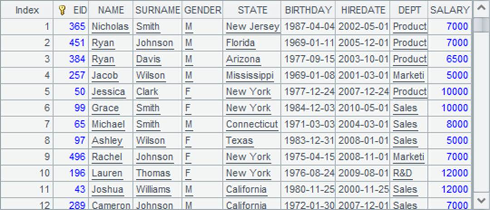
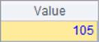
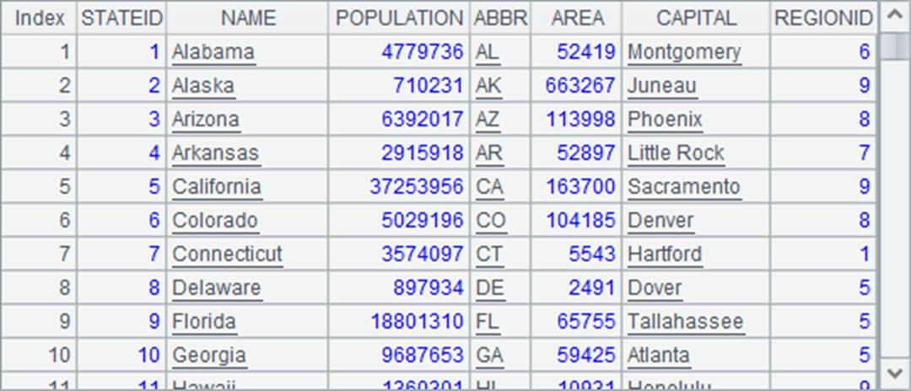
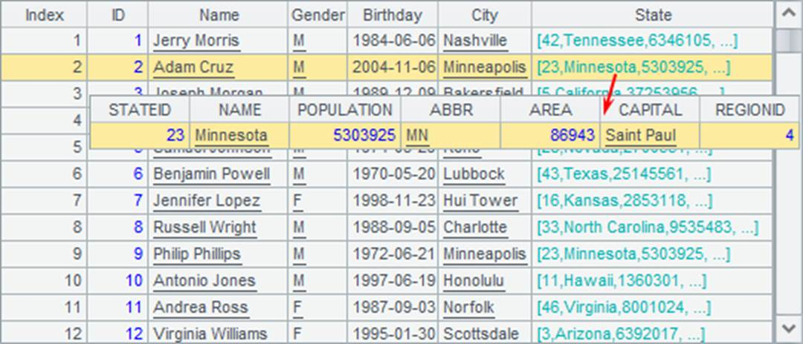

Why esProc can increase efficiency significantly by using primary key to make search queries? Two factors: the key-based judgement is simple without involving computing the filter expression; and the primary key-based index table can be used for the computation.
We can use @i option in keys() when calling the function to generate the index table on the primary key. A hash table will be created according to all primary key values when the index table is generated. It divides primary key values into multiple groups by hash values, which correspond to group numbers.
Normally, records of a table sequence need to be traversed when performing a key-based query until each targeted record is found. An average of n/2 comparisons are needed for querying a table sequence containing n records.
Thanks to the index table, searching a table sequence for a certain record according to the primary key value would make a difference. First, the hash values will be computed according to the primary key values. According to the hash values, the group corresponding to the targeted record will be directly found in the index table. Then we just need to compare the key value with records of the identified group. In this way, for a table sequence containing n records and with its primary key values distributed in k groups by hash values, only an average of n/2k comparisons are needed. Though hash values must be computed before an index table is generated and the query is executed, the number of comparisons is reduced significantly, and particularly, the index table needs to be generated only once. Therefore, the more the data in a table sequence and the more the queries, the higher the efficiency when performing the primary-key-based queries.
T.index(n) function can be used to create an index table for the table sequence T¡¯s primary key in advance. n is the length of the index table. Default value will be used if n isn¡¯t supplied.
What we should know is that we can use the primary-key-based query functions, such as find and pfind, to enhance computational performance effectively by creating index table for the table sequence¡¯s primary key. So, if the primary key itself can be used as the index to locate records, it is unnecessary to create one. EID field in the above EMPLOYEE table, for example, represents the positions of the records in the table sequence, thus it is more efficient to use it to find the corresponding records.
|
|
A |
|
1 |
=demo.query("select * from EMPLOYEE").keys(EID) |
|
2 |
=10000.(A1(rand(A1.len())+1).EID) |
|
3 |
=now() |
|
4 |
=A2.(A1(A2.~)) |
|
5 |
=interval@ms(A3,now()) |
|
6 |
=now() |
|
7 |
=A2.(A1.find(A2.~)) |
|
8 |
=interval@ms(A6,now()) |
|
9 |
=demo.query("select * from EMPLOYEE").keys@i(EID) |
|
10 |
=now() |
|
11 |
=A2.(A9.find(A2.~)) |
|
12 |
=interval@ms(A10,now()) |
This time 10,000 ordinal numbers of employees are generated randomly. A4 finds the corresponding records according to these ordinal numbers; A7 still uses find function to find records; A9 uses keys@i to create the index table while setting up the primary key and then A11 performs same query as A7. A5, A8 and A12 compute respectively the time the three methods take:
  
It is much faster to locate records using ordinal numbers directly because this method does not compare field values, nor does it compute hash values and create an index table. The index table created in A9 also increases performance much though it takes time to create one. The query results in A4, A7 and A11 are same:

Thus, you need to weigh the pros and cons when trying to increase efficiency by creating an index table for a table sequence¡¯s primary key in esProc.